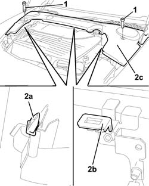

7040D50 ENGINE COMPARTMENT UPPER SOUND INSULATION SHIELD - R.R.
- Path
- Procedures > 70 FITTINGS > 7040 BODY INTERIOR UPHOLSTERY AND TRIM > 7040D ENGINE COMPARTMENT LINING > 7040D50 ENGINE COMPARTMENT UPPER SOUND INSULATION SHIELD - R.R.
- Kind
- repair procedure (removal / refitting; the operation number is the code)
- Applies to
- all engines; all production periods
- Interactive page
- https://sloeber94.github.io/elrnDB-lThss/en/#/480320
Applies to: all engines; all production periods
 Removing
Removing
 Refitting
Refitting- Open the bonnet.
1. Undo the retaining bolts.
2. Release the fastening pins (2a) from the slots (2b), then remove the sound insulation panel (2c).

Applies to: all engines; all production periods
Refitting
Removing- Position the sound insulation cover securing the fastening pins in the slots.
- Tighten the two fixing bolts.
- Close the bonnet.
Topics that link to this page (297)
- 0010T20 Engine REFRIGERANT FLUID - Change
- 0010T21 ENGINE COOLANT - Check density and top up if necessary
- 0010T40 MANUAL GEARBOX OIL - Change
- 0010T44 AUTOMATIC TRANSMISSION FLUID - Change
- 0010T45 AUTOMATIC TRANSMISSION FLUID - Check level and top up if necessary
- 0010T65 HYDRAULIC BRAKING SYSTEM - BLEED AIR
- 0010T67 HYDRAULIC CLUTCH SYSTEM - Bleed air
- 0010T70 POWER ASSISTED STEERING FLUID - Replace
- 1004B10 POWER UNIT with manual gearbox - R.R.
- 1004B17 POWER UNIT with automatic transmission, complete with support frame, front suspension- R.R. for versions with air conditioning
- 1004B10 POWER UNIT with manual gearbox - R.R.
- 1004B18 POWER UNIT with manual gearbox, with front suspension subframe - R.R.
- 1008A42 Power unit RIGID MOUNT - GEARBOX side - R&R
- 1008A44 RIGID REAR power unit MOUNTING - R.R.
- 1008A46 Power unit RIGID MOUNT - TIMING side - R&R
- 1008B10 FLEXIBLE MOUNTING for power unit front support (timing side) - Replace
- 1008B20 Power unit rear support FLEXIBLE MOUNTING - Replace
- 1008B30 Gearbox side mount FLEXIBLE BLOCK/S - Replace
- 1008C10 Power unit REACTION ROD - Replace
- 1008C16 BRACKET on BODY for reaction link - R.R.
- 1008A42 Power unit RIGID MOUNT - GEARBOX side - R&R
- 1008A43 Power unit RIGID MOUNT - AUTOMATIC GEARBOX side - R&R
- 1008A44 RIGID REAR power unit MOUNTING - R.R.
- 1008A46 Power unit RIGID MOUNT - TIMING side - R&R
- 1008B10 FLEXIBLE MOUNTING for power unit front support (timing side) - Replace
- 1008B20 Power unit rear support FLEXIBLE MOUNTING - Replace
- 1008B30 Gearbox side mount FLEXIBLE BLOCK/S - Replace
- 1008C10 Power unit REACTION ROD - Replace
- 1008C14 BRACKET ON ENGINE FOR REACTION ROD
- 1008C16 BRACKET on BODY for reaction link - R.R.
- 1008A42 Power unit RIGID MOUNT - GEARBOX side - R&R
- 1008A44 RIGID REAR power unit MOUNTING - R.R.
- 1008A46 Power unit RIGID MOUNT - TIMING side - R&R
- 1008B10 FLEXIBLE MOUNTING for power unit front support (timing side) - Replace
- 1008B20 Power unit rear support FLEXIBLE MOUNTING - Replace
- 1008C10 Power unit REACTION ROD - Replace
- 1008C16 BRACKET on BODY for reaction link - R.R.
- 1016A20 Single TAPPET COVER - R.R. and Replace gasket
- 1016C10 SINGLE CYLINDER HEAD - R.R. and Replace gasket
- 1016A20 SINGLE TAPPET COVER - R.R. AND REPLACE GASKET
- 1016A30 Left TAPPET COVER - R.R. and Replace gasket
- 1016A34 Right TAPPET COVER - R.R. and Replace gasket
- 1016A36 Left and right TAPPET COVERS - R.R.
- 1016A46 Ignition COILS COVER on cylinder head - R.R.
- 1016C10 SINGLE CYLINDER HEAD - R.R. and Replace gasket
- 1016D20 LEFT CYLINDER HEAD - R.R. and replace gasket
- 1016D24 RIGHT CYLINDER HEAD - REMOVING-REFITTING AND REPLACING GASKET
- 1016B10 SINGLE CAMSHAFT HOUSING - REPLACE gasket
- 1016C10 SINGLE CYLINDER HEAD - R.R. and Replace gasket
- 1020A20 CRANKCASE SUMP - R.R. clean contact surfaces and apply sealant
- 1020D08 FRONT crankshaft oil seal COVER - R.R. and replace seals with timing belt(s) removed for versions with automatic transmission
- 1020D12 Crankshaft oil seal FRONT COVER - R.R. and Replace seals
- 1020D18 Front crankshaft COVER OIL SEAL - Replace
- 1020D26 Flywheel side oil seal COVER - R.R. and Replace seals
- 1020D39 Flywheel side OIL SEAL - Replace for versions with automatic transmission
- 1020D18 Front crankshaft COVER OIL SEAL - Replace
- 1020A20 CRANKCASE SUMP - R.R. clean contact surfaces and apply sealant
- 1020D12 Crankshaft oil seal FRONT COVER - R.R. and Replace seals
- 1020D18 Front crankshaft COVER OIL SEAL - Replace
- 1024B20 ENGINE FLYWHEEL - R&R for versions with automatic transmission
- 1028H10 CONNECTING ROD and PISTON SET - R&R
- 1032B10 TOOTHED timing BELT - R.R. for timing adjustment or replacement
- 1032B46 TOOTHED DRIVE PULLEY/S - R.R.
- 1032B52 TOOTHED DRIVEN PULLEY (one) - R.R.
- 1032B60 TOOTHED DRIVEN PULLEY - R.R.
- 1032C18 Timing belt MOVING TENSIONER - R.R.
- 1032C32 TIMING BELT FIXED TENSIONER - R.R.
- 1032D12 Timing system protective COVER(S) - R.R.
- 1032B10 TOOTHED timing BELT - R.R. for timing adjustment or replacement
- 1032B46 TOOTHED DRIVE PULLEY/S - R.R.
- 1032B52 TOOTHED DRIVEN PULLEY (one) - R.R.
- 1032B60 TOOTHED DRIVEN PULLEY - R.R.
- 1032C18 Timing belt MOVING TENSIONER - R.R.
- 1032C32 TIMING BELT FIXED TENSIONER - R.R.
- 1032D12 Timing system protective COVER(S) - R.R.
- 1032B10 TOOTHED timing BELT - R.R. for timing adjustment or replacement
- 1032B46 TOOTHED DRIVE PULLEY/S - R.R.
- 1032B52 TOOTHED DRIVEN PULLEY (one) - R.R.
- 1032B55 LEFT HEAD TOOTHED DRIVEN PULLIES - R.R. FOR VERSIONS WITH AIR CONDITIONING
- 1032B58 DRIVEN TOOTHED PULLIES
- 1032C18 Timing belt MOVING TENSIONER - R.R.
- 1032C32 TIMING BELT FIXED TENSIONER - R.R.
- 1032D12 Timing system protective COVER(S) - R.R.
- 1036L10 CAMSHAFTS in camshaft housing RR includes camshaft housing replacement.
- 1036L30 FRONT OIL SEAL for camshaft housing camshaft - REPLACE
- 1036C10 CAMSHAFTS in cylinder head - R.R.
- 1036C39 timing variator on cylinder head intake camshaft - r r
- 1036E10 CAMSHAFTS in left cylinder head - R.R. on vehicle
- 1036E15 Right cylinder head CAMSHAFTS - R.R. on vehicle for versions with air conditioning
- 1036E54 OIL SEALS FOR LEFT CYLINDER HEAD CAMSHAFTS - REPLACE
- 1036E58 OIL SEALS FOR RIGHT CYLINDER HEAD CAMSHAFTS - REPLACE
- 1036H58 HYDRAULIC TAPPETS (all) - R.R. - Includes R.R. camshaft
- 1036B10 CAMSHAFT in cylinder head - R.R. on vehicle
- 1040B42 SUPPLY PIPE from fuel filter to carburettor/injection device - R.R.
- 1044B10 fuel filter assembly - r + r or replace
- 1044B20 fuel filter filtering element - replace
- 1044D10 FUEL HEATER - R.R.
- 1044B10 fuel filter assembly - r + r or replace
- 1044B16 Fuel supply/return adjustment valve on fuel filter - R.R.
- 1044B20 fuel filter filtering element - replace
- 1044D10 FUEL HEATER - R.R.
- 1048A10 COMPLETE AIR FILTER -R.R.
- 1048A14 air cleaner filtering element - replace.
- 1048A50 air inlet pipe to turbocharger - r + r
- 1048A56 UPPER RESONATOR - R.R.
- 1048A57 LOWER RESONATOR - R.R.
- 1048B14 air delivery pipe between turbo charger and heat exchanger - replace
- 1048B20 Air supply HOSE from heat exchanger to rigid pipe -Replace
- 1048B44 RIGID air supply PIPE from heat exchanger to intake manifold - R.R.
- 1048B45 RIGID air supply PIPE between heat exchanger and intermediate hose - R.R.
- 1048A10 COMPLETE AIR FILTER -R.R.
- 1048A11 COMPLETE AIR FILTER -R.R.
- 1048A14 air cleaner filtering element - replace.
- 1048A28 vacuum air circuit resonator pipe - r+r
- 1048A35 HOSE FROM FLOW METER TO RESONATOR - R.R.
- 1048A50 air inlet pipe to turbocharger - r + r
- 1048A54 TURBOCHARGER air inlet HOSE from rigid pipe - R.R.
- 1048B14 air delivery pipe between turbo charger and heat exchanger - replace
- 1048B44 RIGID air supply PIPE from heat exchanger to intake manifold - R.R.
- 1048B50 Air/air HEAT EXCHANGER - R.R.
- 1048A10 AIR FILTER CASING - R.R.
- 1048B14 air delivery pipe between turbo charger and heat exchanger - replace
- 1048B20 Air supply HOSE from heat exchanger to rigid pipe -Replace
- 1048B44 RIGID air supply PIPE from heat exchanger to intake manifold - R.R.
- 1048B50 Air/air HEAT EXCHANGER - R.R.
- 1056B10 AIR FLOW METER - R.R.
- 1056B14 THROTTLE CASING - R.R.
- 1056B17 THROTTLE CASING WITH D.V.L. - R.R.
- 1056B50 Coolant temperature SENSOR - R.R.
- 1056B51 CAM ANGLE SENSOR - R.R.
- 1056B60 single fuel manifold pipe, with injectors - r + r
- 1056B82 Injection/ignition system CONTROL UNIT (one) - R.R.
- 1056B90 SYSTEM CABLE LOOM - R.R.
- 1060E10 PRESSURE PUMP for diesel injection - R.R.
- 1060E30 PRESSURE PUMP drive PULLEY - R.R.
- 1060E40 PRESSURE PUMP SUPPORT - R.R.
- 1060F10 INJECTORS - R.R.
- 1060F20 PIPE from PRESSURE PUMP to FUEL MANIFOLD - R.R.
- 1060F30 SINGLE FUEL MANIFOLD PIPE - R.R.
- 1060F50 FUEL RETURN MANIFOLD PIPE - R&R
- 1060G10 AIR FLOW METER - R.R.
- 1060G14 Engine COOLANT TEMPERATURE SENSOR - R.R.
- 1060G16 PRESSURE RELIEF SENSOR - R.R.
- 1060G30 WATER in fuel filter PRESENCE SENSOR - R.R.
- 1060G50 PNEUMATICALLY CONTROLLED THROTTLE CASING - R.R.
- 1060G70 VACUUM RESERVOIR - R.R.
- 1060G72 Solenoid valve on vacuum reservoir for throttle casing pneumatic valve - R.R.
- 1060E10 PRESSURE PUMP for diesel injection - R.R.
- 1060E30 PRESSURE PUMP drive PULLEY - R.R.
- 1060E40 PRESSURE PUMP SUPPORT - R.R.
- 1064A19 HOSE CONNECTED to EXHAUST PIPE - R.R.
- 1064A24 TURBOCHARGER - EXHAUST MANIFOLD - HOSE CONNECTED TO EXHAUST PIPE - R.R.
- 1072B10 INTAKE MANIFOLD - R.R. and Replace gasket
- 1072B48 Air CHAMBER complete with intake manifolds - R.R. and Replace gaskets
- 1072B50 Air CHAMBER - R.R.
- 1072B54 HOSES CONNECTING AIR CHAMBER TO INTAKE MANIFOLD(S) - R.R.
- 1072C10 EXHAUST MANIFOLD - R.R. and Replace seal
- 1072C13 EXHAUST MANIFOLD GASKET - REPLACEMENT
- 1072C44 Exhaust manifold heat shield on BULKHEAD - R.R.
- 1072D50 DEVICE (V.I.S.) with adjustable air ducts - R.R.
- 1072D54 ADJUSTABLE AIR DUCTS (V.I.S.) CONTROL ACTUATOR - R.R.
- 1072B10 INTAKE MANIFOLD - R.R. and Replace gasket
- 1072C44 Exhaust manifold heat shield on BULKHEAD - R.R.
- 1076B10 Exhaust PIPE assembly - R.R.
- 1080B40 CATALYTIC PRECONVERTER - R.R.
- 1080B62 CATALYTIC CONVERTER - R.R.
- 1080E28 enablement solenoid for flow of fuel vapours to inlet - r+r
- 1080E63 Flexible PIPE between rigid pipe and fuel vapour cut out SOLENOID VALVE - R.R.
- 1080C26 MOTOR FOR EGR VALVE SELF-ADJUSTMENT - R.R.
- 1080C74 E.G.R. VALVE - R.R.
- 1080C80 Water/exhaust gas heat exchanger for E.G.R. system - R.R.
- 1080D10 OIL VAPOUR PIPES FROM INTAKE TO SEPARATOR - R.R.
- 1080D14 OIL VAPOUR PIPES FROM SEPARATOR TO INTAKE - R.R.
- 1080D17 PIPE from engine oil vapour separator to filler fitting - R&R
- 1080D34 Engine oil vapour SEPARATOR - R.R.
- 1084A16 Engine oil dip stick PIPE - R.R.
- 1084A22 Engine oil FILLER - R.R.
- 1084B40 Engine oil supply pipe to turbocharger
- 1084C10 Engine oil heat exchanger - R.R.
- 1084C38 Engine oil supply and return pipes to cooling radiator - R.R.
- 1084A16 Engine oil dip stick PIPE - R.R.
- 1084B16 ENGINE OIL PUMP - R.R. FOR VEHICLES WITH AIR CONDITIONING
- 1084B23 OIL PUMP IDLER DRIVE GEARS AND CHAIN - R.R.
- 1084B40 Engine oil supply pipe to turbocharger
- 1084B42 Engine oil return pipe to turbocharger
- 1084C10 Engine oil heat exchanger - R.R.
- 1088B10 Engine coolant SUPPLY RESERVOIR - R.R.
- 1088B20 Engine cooling RADIATOR - R.R.
- 1088B30 COOLANT LEVEL SENSOR - R.R.
- 1088C10 WATER PUMP - R.R.
- 1088C30 THERMOSTAT UNIT - R.R.
- 1088C36 THERMOSTAT MOUNTING - R.R.
- 1088D10 LOWER radaitor coolant outlet HOSE - R.R.
- 1088D14 UPPER radiator coolant inlet HOSE - R.R.
- 1088D22 WATER PUMP INLET CONNECTOR - R.R.
- 1088D24 RIGID PIPE for coolant inlet to water pump - R&R
- 1088D26 rigid intake pipe to water pump - r+r for versions with a/c
- 1088D36 CONNECTOR ON CRANKCASE FOR CYLINDER HEAD/CRANKCASE WATER CIRCUIT HOSE WITH THERMOSTAT CLOSED - R.R.
- 1088D38 CYLINDER HEAD/CRANKCASE WATER CIRCUIT HOSE WITH THERMOSTAT CLOSED - R.R.
- 1088D47 COOLANT SUPPLY AND RETURN HOSES TO ENGINE OIL HEAT EXCHANGER - R.R.
- 1088D63 Alternator side flexible hose for alternator coolant return pipe - R.R.
- 1088D64 Rigid alternator rigid coolant return pipe - R.R.
- 1088D65 Flexible HOSE between thermostat and alternator coolant rigid return pipe - R.R.
- 1088D68 Connectors on coolant circuit alternator - R.R. or replace gasket
- 1088E10 Radiator cooling FAN - R.R.
- 1088E42 ENGINE COOLANT TEMPERATURE MULTIFUNCTION CONTROL UNIT - R.R.
- 1088B10 Engine coolant SUPPLY RESERVOIR - R.R.
- 1088B30 COOLANT LEVEL SENSOR - R.R.
- 1088C10 WATER PUMP - R.R.
- 1088C30 THERMOSTAT UNIT - R.R.
- 1088D10 LOWER radaitor coolant outlet HOSE - R.R.
- 1088D14 UPPER radiator coolant inlet HOSE - R.R.
- 1088D24 RIGID PIPE for coolant inlet to water pump - R&R
- 1088E10 Radiator cooling FAN - R.R.
- 1092A10 Crankshaft PULLEY - R.R.
- 1092G10 Engine components single drive BELT - R.R.
- 1092G14 Engine components single belt MOVING TENSIONER - R.R.
- 1092G20 Engine components single belt FIXED TENSIONER - R.R.
- 1092G40 Engine components single belt cam TENSIONER - R.R.
- 1092G10 Engine components single drive BELT - R.R.
- 1092G14 Engine components single belt MOVING TENSIONER - R.R.
- 1092G20 Engine components single belt FIXED TENSIONER - R.R.
- 1092G40 Engine components single belt cam TENSIONER - R.R.
- 1092G10 Engine components single drive BELT - R.R.
- 1092G14 Engine components single belt MOVING TENSIONER - R.R.
- 1092G20 Engine components single belt FIXED TENSIONER - R.R.
- 1092G40 Engine components single belt CAM BELT TENSIONER - R.R.
- 1820B20 MASTER CYLINDER (pump) - R.R. and Bleed air
- 1820B40 FLEXIBLE PIPE from clutch reservoir to master cylinder (pump) - R.R. and Bleed air
- 1820B46 SUPPLY PIPE FROM MASTER CYLINDER (PUMP) - R.R.
- 2130A10 AUTOMATIC TRANSMISSION - R.R.
- 2130A38 Automatic transmission HEAT EXCHANGER - R.R.
- 2130A70 Rubber hose with built in flexible pipe for directing coolant to automatic transmission oil heat exchanger
- 2130A74 Flexible water return pipe to crankcase between rigid pipe and automatic transmission fluid heat exchanger
- 2130B12 Automatic transmission TORQUE CONVERTER - R.R.
- 2130B36 Automatic transmission SOLENOID VALVE COVER - R.R.
- 2130B40 Gear selector SOLENOID VALVE UNIT - R.R.
- 2130B48 GEAR SELECTOR on automatic transmission - R.R.
- 2135A10 Automatic transmission control LEVER AND SUPPORT - R.R. and overhaul
- 2135A12 Gear engagement CABLE - R.R.
- 2135B58 ELECTRONIC AUTOMATIC TRANSMISSION system WIRING - R.R.
- 2135B72 ELECTRONIC AUTOMATIC GEARBOX INPUT RPM SENSOR - R.R.
- 2135B74 ELECTRONIC AUTOMATIC GEARBOX OUTPUT RPM SENSOR - R.R.
- 3330C10 MASTER CYLINDER (PUMP) - R.R. - Bleed air from brakes separately
- 3330C30 brake fluid reservoir - r + r and wash inside
- 3330D10 BRAKE SERVO - R.R.
- 3330D20 one-way valve for brake servo - r+r
- 3330D24 vacuum pipe for brake servo - r+r
- 3330D30 vacuum pump - r+r
- 3330D42 VACUUM INCREASE VALVE - R&R
- 3340A12 A.B.S. hydraulic and electronic CONTROL UNIT - R.R. - Includes bleeding air
- 3340B55 RIGID PIPE from hydraulic CONTROL UNIT to LEFT FRONT BRAKE - R.R.
- 4130B10 POWER ASSISTED STEERING FLUID RESERVOIR - R.R. - Includes bleeding air
- 4130B20 POWER ASSISTED STEERING PUMP - R.R.
- 4130B32 POWER STEERING - R.R.
- 4130B34 Supply PIPE from fluid RESERVOIR to POWER ASSISTED STEERING PUMP - R.R. Includes bleeding air
- 4130B52 HEAT EXCHANGER PIPE - R.R.
- 4130B82 Rubber PIPE from rigid return pipe to fluid reservoir - Includes bleeding air
- 4130B94 DUPLEX PIPES from cooling coil or heat exchanger radiator - R.R.
- 4410B82 Upper track control arm support
- 4410D10 Front suspension FRAME - R.R.
- 4420B34 Rear suspension TRACK CONTROL ARM, left or right - R.R.
- 4420D10 REAR SUSPENSION AXLE - R.R.
- 4440F12 Front intelligent suspension SHOCK ABSORBER (one) - Includes dismantling/reassembly at the bench - R.R.
- 5010A12 engine/heater line - r r
- 5010A16 Water return PIPE from heater - R.R.
- 5010B56 Duct between climate control casing and air duct to rear seats - R.R.
- 5040A20 Air conditioning COMPRESSOR - R.R. - Includes fluid level check and top up if necessary
- 5040A40 Air conditioner CONDENSER - R.R.
- 5040A41 Air conditioning condenser FAN - R.R.
- 5040A44 Air conditioner drier filter/accumulator - R&R
- 5040A50 PIPE from compressor to air conditioner condenser - R&R
- 5040A52 PIPE from condenser to drier filter - R&R
- 5040A54 Pipe from drier filter to expansion valve - R.R.
- 5040A72 Pipe from expansion valve to coupling - R.R.
- 5040A73 Compressor inlet PIPE - R.R.
- 5040B31 Expansion VALVE on evaporator for automatic climate control system - R.R.
- 5050B10 front windscreen washer jets - r+r clean and/or position
- 5050B34 WINDSCREEN WIPER ARM(S) for front windscreen wiper complete with blade
- 5050B42 Front windscreen wiper MOTOR - R.R.
- 5505C26 ENGINE COMPARTMENT built in wiring - R.R.
- 5505C31 Under-FACIA WIRING - R.R.
- 5505C40 Passenger compartment wiring - R.R. with interfering components removed
- 5505C41 PASSENGER COMPARTMENT built in WIRING - R.R.
- 5510C10 IGNITION COIL/REEL - R&R
- 5510C36 RPM SENSOR - R.R.
- 5510C44 KNOCK SENSOR (one) - R&R
- 5510C45 DETONATION SENSOR (one- remaining) R.R. after Op. 5510C44
- 5510C46 FLYWHEEL SIDE DETONATION SENSOR - R.R.
- 5510C48 TIMING SIDE DETONATION SENSOR - R.R.
- 5520B10 STARTER MOTOR - R&R
- 5520C10 HEATER PLUGS - R.R.
- 5530A10 ALTERNATOR - R.R.
- 5530A40 Alternator BRACKETS/MOUNT/SPACER - R&R
- 5530B34 LEAD between junction unit terminal and starter motor - R.R.
- 5530B36 LEAD between starter motor and alternator - R.R.
- 7055A18 Winsdcreen base TRIM - R.R.